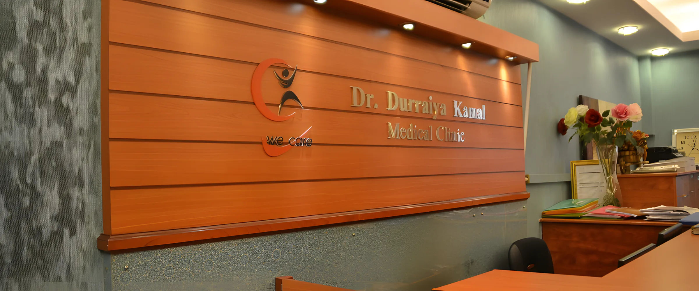
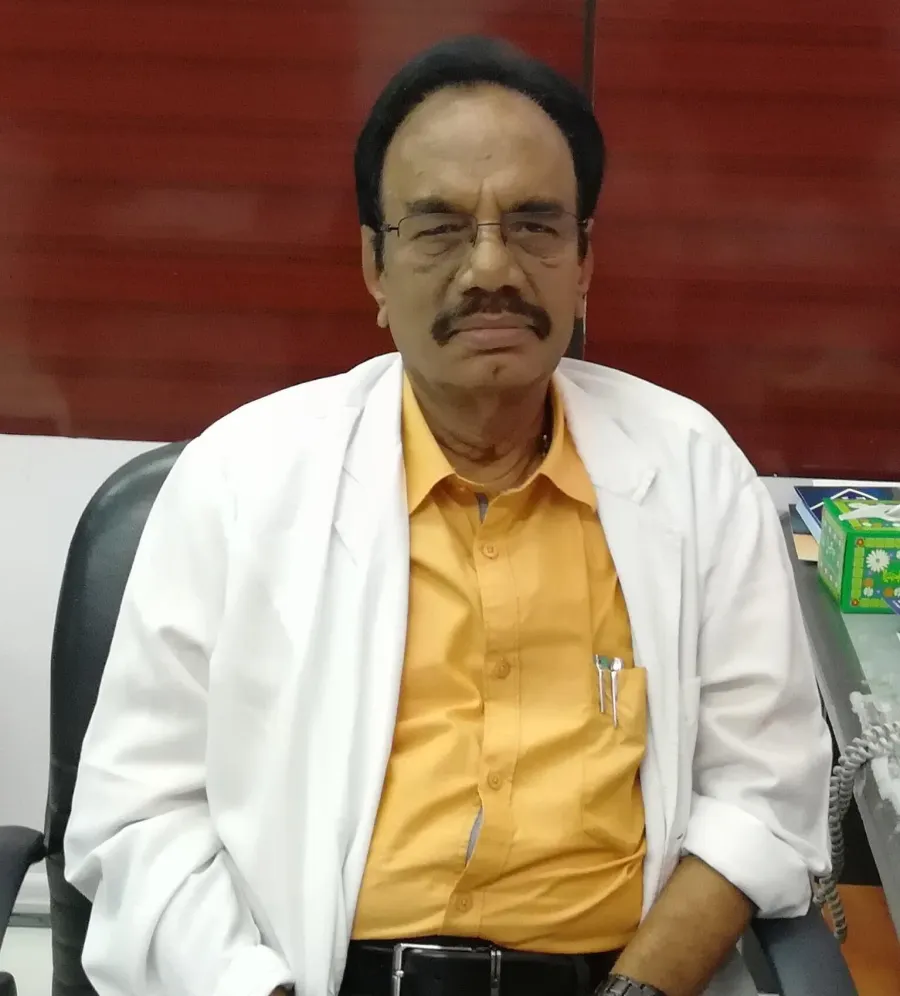
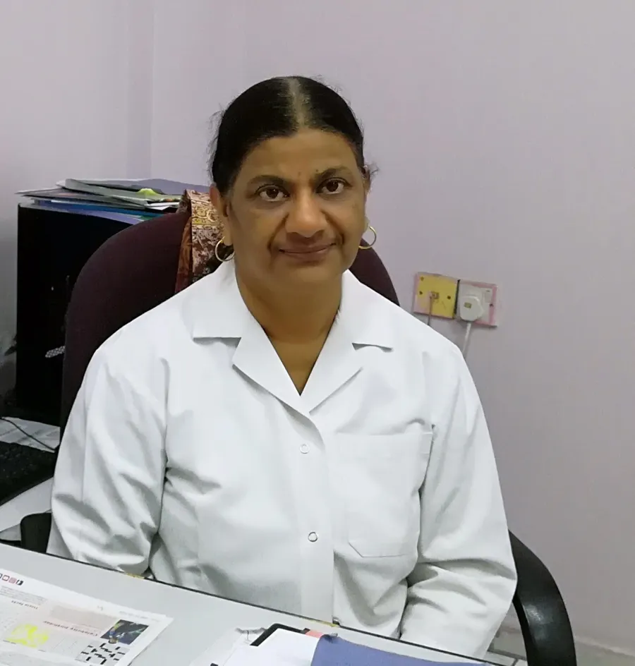
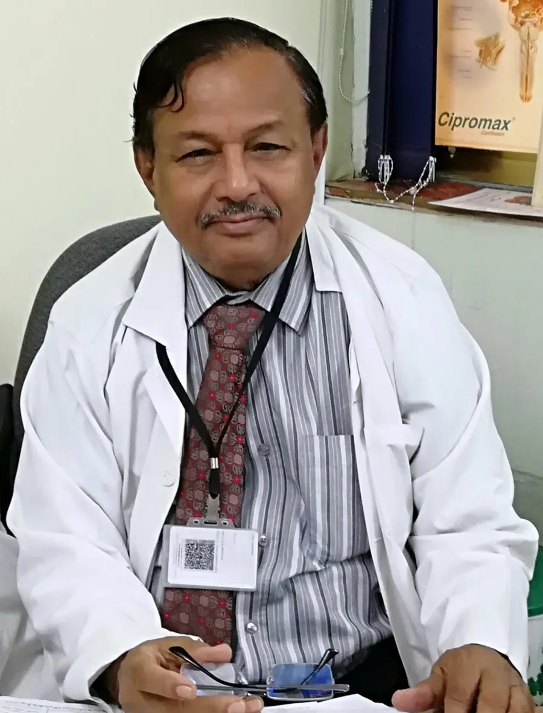

Family doctorsat Baniyas Squarefor over thirty years.

Dr Durraiya Kamal's clinic in Deira. GPs, a children's doctor, and specialists in internal medicine, women's health, ENT and urology, with physiotherapy, X-ray, ultrasound and a dental centre in the same clinic.
- Sat–Thu
- 8:30am–1pm · 4:30–9:30pm
- Friday
- 9–11am · 4–9pm
- Where
- First floor, next to Habib Bank AG Zurich

Dr (Mrs) Durraiya Kamal
M.B.B.S., M.D. (Paediatrics) · Founder
The doctors
Dr Durraiya trained in India and came to the UAE in 1984. She is a GP and children's doctor: babies and children come to her for check-ups, growth and weight monitoring and their vaccinations, and adults for health checks and long-term conditions. Many patients have relied on her for years.

Dr DurairajanM.B.B.S., M.D. (Internal Medicine)
Diabetes, blood pressure and cholesterol. Former professor and head of internal medicine at a government teaching hospital in Tamil Nadu.

Dr Rekha Harshkumar JaiswalMBBS, MD (Obstetrics & Gynaecology)
Screening, antenatal and postnatal care, and gynaecological conditions.

Dr S.K. BiradarM.B.B.S., M.S., M.Ch (Urology)
Urology, plus minor surgery: stitches, ingrown toenails, foreign bodies and circumcision. Over 35 years' experience.

Dr (Mrs) Anuja RejiM.B.B.S., DLO, DNB (ENT)
GP with ENT work: nasal endoscopy, hearing tests, ear cleaning and removing foreign bodies.

Dr Tecil Joy AnalilMBBS, General Physician
General practice. A UAE medical graduate.
Dental centre: Dr Arjumand Aakhtar, Dr Nausheer Mohd, Dr Pratik Tamakuwala and Dr Gyatri Mago (orthodontist).
What the clinic sees
Most things a family needs, in one place. The X-ray, ultrasound and lab are in the clinic, which helps the doctors reach a diagnosis quicker.
Family medicineCheck-ups, long-term conditions, travel vaccinationsDr Tecil Joy Analil
Dr Anuja Reji
From a child's first checks to adult health needs. General medical check-ups, follow-up of chronic conditions and travel vaccinations, with X-ray and ultrasound here when the doctor needs them.
Call 04 223 8612 to bookChildrenWell-baby clinic, growth checks, vaccinationsDr Durraiya Kamal
- Routine health checks
- Growth and weight monitoring
- Immunisations, following WHO guidelines
- Well-baby clinic
Internal medicineDiabetes, blood pressure and cholesterol clinicsDr Durairajan
Regular clinics for diabetes, hypertension and dyslipidaemia. You get a check-up at each visit and advice on keeping the condition under control.
Call 04 223 8612 to bookWomen's healthObstetrics and gynaecologyDr Rekha Jaiswal
- Pregnancy test and antenatal checks
- Postnatal care
- Contraception advice and IUD
- Period problems
- Urinary incontinence
- Vaginal infections
- Sexual health advice
- Screening
Ear, nose and throatHearing tests, ear wax, allergies, throat infectionsDr Anuja Reji
- Foreign body removal
- Audiograms
- Ear wax removal
- Ear stitching
- Nasal endoscopy
- Allergic rhinitis and throat infections
Urology and minor surgeryStones, prostate, stitches, ingrown toenailsDr S.K. Biradar
- Kidney and bladder stones
- Prostate problems
- Erectile dysfunction and infertility
- Suturing
- Ingrown toenail removal
- Circumcision
PhysiotherapyTraction, TENS, ultrasound, rehabilitationOur physiotherapist
- Traction
- Interferential and short wave therapy
- Therapeutic ultrasound
- TENS and muscle stimulation
- Paraffin wax therapy
- Heart, lung and neurological rehab
X-ray and ultrasoundDone in the clinic by our radiographerRadiology
Our radiographer runs the X-ray and ultrasound here in the clinic, so your doctor can get the pictures they need without sending you elsewhere.
Call 04 223 8612 to askDental centreCheck-ups, fillings, crowns, whitening, bracesFour dentists
- Routine dental check-up
- Fillings, crowns and bridges
- Teeth whitening
- Hygiene treatment
- Orthodontics (Dr Gyatri Mago)
- Prevention advice
Inside the clinic
One floor up from Baniyas Square: the reception, the waiting room, the doctors' rooms, the X-ray room and the dental centre.


Insurance
These are the insurers and networks on our current list. Plans and networks change, so call us with your card details before you come and we'll check yours.
- Daman
- Thiqa
- ADNIC
- AXA
- Bupa
- Oman Insurance Company
- MetLife
- Allianz Worldwide Care
- Al Buhaira National Insurance
- NAS
- NextCare
- Neuron
- Almadallah
- FMC Network UAE
- Vidal Health
- Iris Health Services
- Aafiya
- Fortune TPA Healthcare
- Pentacare
- Starwell
Find us
First floor, next to Habib Bank AG Zurich, Baniyas Square, Al Maktoum Road, Deira, Dubai
- Two minutes' walk from Baniyas Square metro station
- Road buses and water buses stop close by
- Two multi-storey car parks nearby
| Saturday | 8:30am–1pm · 4:30–9:30pm |
|---|---|
| Sunday | 8:30am–1pm · 4:30–9:30pm |
| Monday | 8:30am–1pm · 4:30–9:30pm |
| Tuesday | 8:30am–1pm · 4:30–9:30pm |
| Wednesday | 8:30am–1pm · 4:30–9:30pm |
| Thursday | 8:30am–1pm · 4:30–9:30pm |
| Friday | 9–11am · 4–9pm |
Google Maps loads when you tap